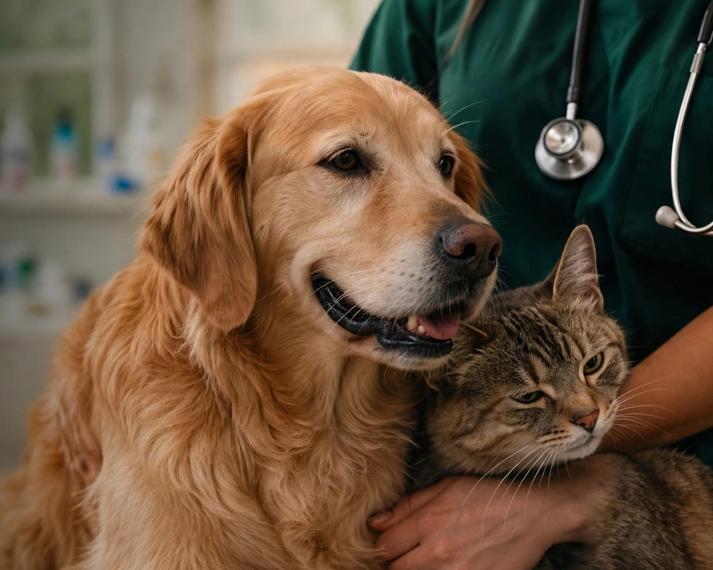
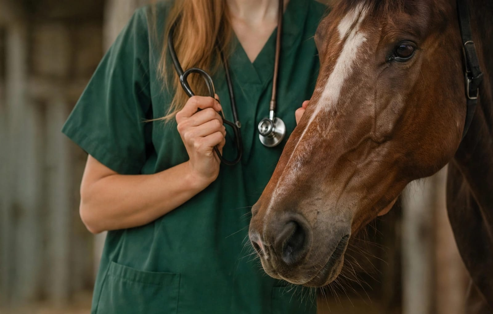

Animal
- Agravamento de doenças
- Lesões e sofrimento
- Procedimentos inadequados
- Atraso no tratamento correto
USO IRREGULAR DA PROFISSÃO
O exercício irregular da profissão pode colocar em risco a saúde dos animais, a segurança dos tutores e a confiança da sociedade.
Conheça os riscosMedicina Veterinária e responsabilidade profissional.

Informações educativas sobre os riscos do exercício irregular da Medicina Veterinária, os grupos afetados e as fontes oficiais para consulta.
O exercício irregular da profissão gera impactos em várias esferas. Entenda como isso afeta cada público.
LEGISLAÇÃO
Referências citadas no trabalho acadêmico. Leia sempre o texto completo nas fontes oficiais.
Regulamenta o exercício da Medicina Veterinária.
Consultar legislaçãoTrata de sanções relacionadas a condutas lesivas ao meio ambiente, incluindo situações previstas na legislação de proteção animal.
Consultar legislaçãoAtenção ao artigo 282 e à alteração legislativa mencionada no trabalho acadêmico. Consulte o texto atualizado na fonte oficial.
Consultar legislaçãoResolução CFMV nº 1.138/2016.
Consultar legislaçãoAs consequências dependem das circunstâncias de cada caso. Este conteúdo é educativo e não substitui orientação jurídica ou profissional.
O exercício irregular pode prejudicar os animais, gerar perdas aos tutores e afetar a confiança da sociedade na Medicina Veterinária. Não é apenas um problema individual: é uma questão coletiva.
Por isso, ética, biossegurança, supervisão adequada e respeito aos limites de formação e atuação são pontos essenciais para um atendimento seguro.
A atuação responsável contribui para o bem-estar animal, a segurança dos tutores e a confiança nos serviços veterinários.
Ver legislação e fontes oficiais
Respostas gerais e educativas. Cada situação deve ser avaliada pelas autoridades competentes.
De modo geral, é a prática de atos privativos do médico-veterinário por quem não possui a formação e o registro exigidos pela legislação. A classificação de cada situação depende das circunstâncias; para dúvidas, consulte o CRMV da sua região.
Pode haver diagnósticos errados, tratamentos inadequados, atraso no cuidado correto, agravamento de doenças e sofrimento desnecessário. Nem toda situação resulta em dano, mas o risco existe quando falta preparo técnico.
Verifique o registro do profissional no CRMV, peça informações claras sobre o procedimento e consulte fontes oficiais, como o CFMV e os conselhos regionais. Desconfie de promessas milagrosas ou de falta de transparência.
Procure o professor, o supervisor de estágio ou a coordenação do curso antes de realizar qualquer atividade. A atuação deve ocorrer com orientação, supervisão e autorização adequadas, conforme as regras da instituição e a legislação.
No portal do Planalto (leis federais) e no site do CFMV (resoluções e Código de Ética). Os links estão na seção Legislação e no rodapé desta página.
Entre em contato com o CRMV do seu estado, que orienta sobre o procedimento adequado. Em caso de suspeita de maus-tratos ou outros ilícitos, procure também as autoridades competentes. Reúna informações, como datas, local e registros, sem fazer acusações precipitadas.